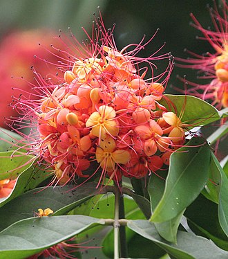

अशोक - Plant Information
अशोक (Saraca asoca)

लॅटिन नाव:
Saraca asoca
फॅमिली:
Caesalpinioideae
मराठी नाव:
अशोक (सीता अशोक)
रस:
तिक्त, कषाय
वीर्य:
शीत
विपाक:
कटु
गुण:
लघु, रुक्ष
उपयोग:
रक्त स्तंभान, विषहर, तृष्णाहर.
वेदना प्रधान विकारांमध्ये लेप लावावा.